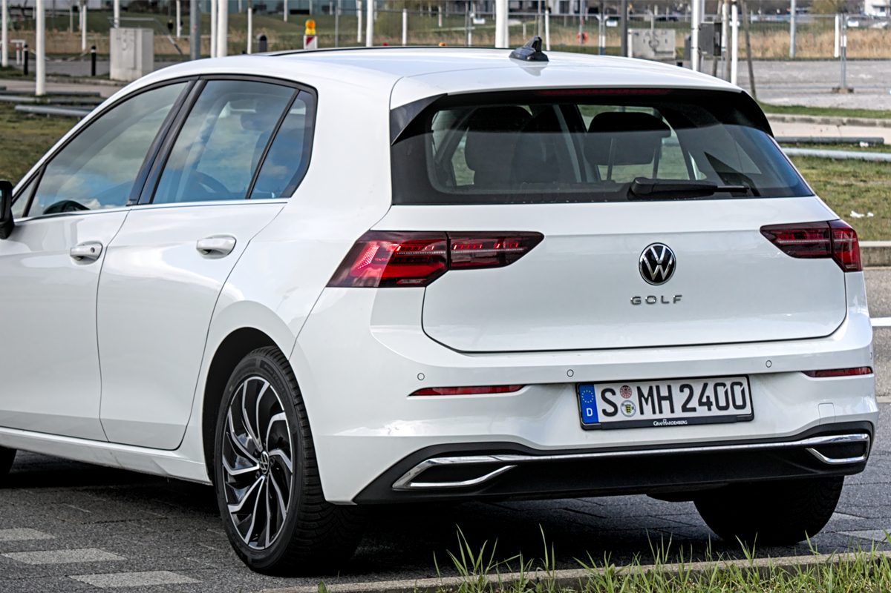
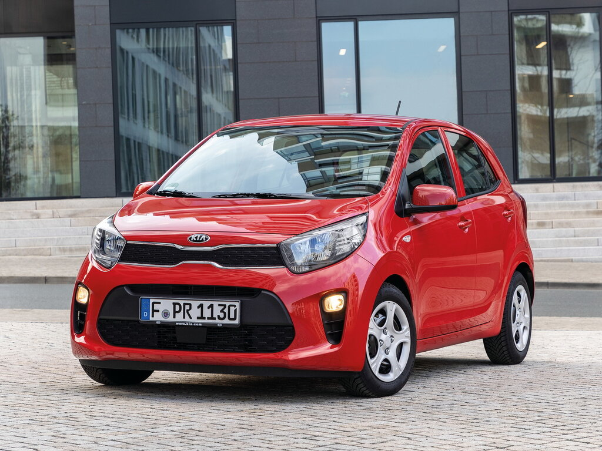
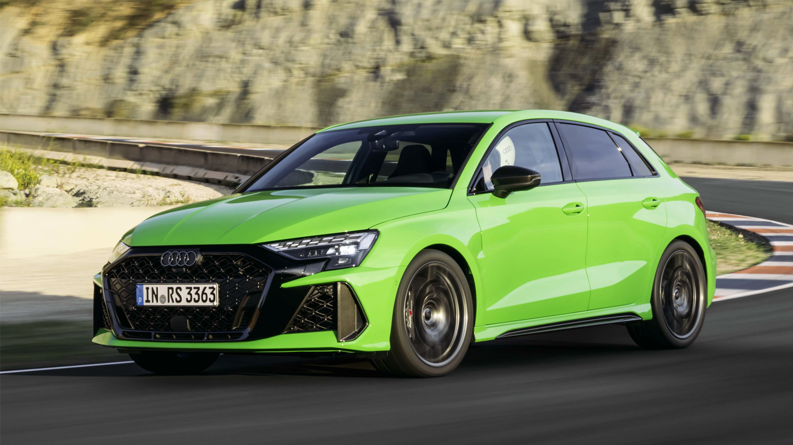
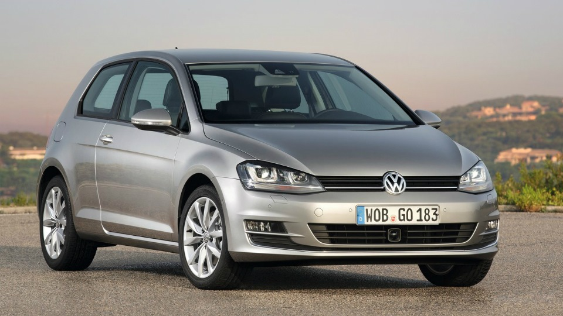
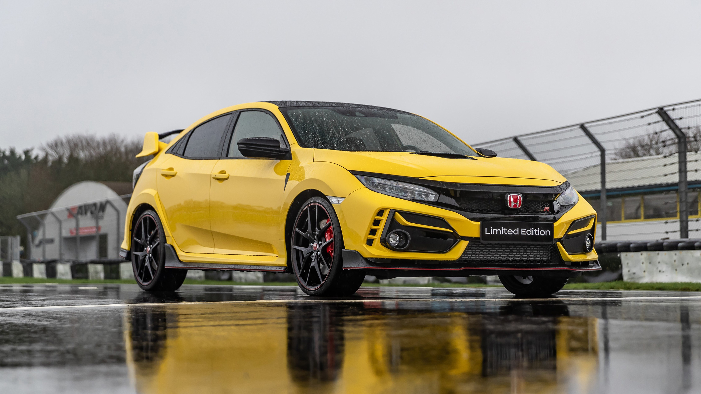

Кузов ХЭТЧБЕК

Хэтчбек (Hatchback) – это тип кузова легкового автомобиля с укороченной задней частью и багажной дверью, которая поднимается вместе с задним стеклом. В отличие от седана, у хэтчбека нет отдельного багажного отсека, а пространство багажника совмещено с салоном, что делает его более практичным и универсальным.
Основные характеристики:
- Форма кузова: Короткая задняя часть, багажник объединён с салоном.
- Количество дверей: Обычно 3 (2+багажник) или 5 (4+багажник).
- Компоновка: Переднеприводные, реже задне- или полноприводные.
- Багажник: Среднего объёма, но при сложенных сиденьях увеличивается.
- Размеры: Обычно от 3,5 до 4,5 метров в длину.
Виды хэтчбеков:
- Трёхдверные хэтчбеки – имеют две боковые двери и багажную. Более спортивный внешний вид, но менее удобны для пассажиров заднего ряда.
- Пятидверные хэтчбеки – более практичны, удобный доступ к задним сиденьям.
- Городские (субкомпактные) хэтчбеки – компактные и экономичные. (Примеры: Kia Picanto, Hyundai i10).
- Среднеразмерные хэтчбеки – сбалансированные между комфортом и практичностью. (Примеры: Volkswagen Golf, Ford Focus).
- Спортивные хэтчбеки – спортивные версии с мощным двигателем и агрессивным дизайном. (Примеры: Honda Civic Type R, Audi RS3 Sportback, Volkswagen Golf R).

Kia Picanto

Audi RS3 Sportback
Преимущества:
- Компактность – удобно для города и парковки.
- Практичность – возможность трансформации салона и увеличения багажного пространства.
- Экономичность – меньше расход топлива по сравнению с седанами и кроссоверами.
- Универсальность – подходит как для города, так и для небольших поездок за город.
Недостатки:
- Меньший объём багажника по сравнению с седаном или универсалом.
- Меньшая шумоизоляция, так как багажник не отделён от салона.
- Менее престижный вид по сравнению с седаном.
Популярные примеры хэтчбеков:
- Бюджетные: Hyundai Solaris Hatchback, Kia Rio X, Renault Sandero.
- Средний класс: Volkswagen Golf, Ford Focus, Toyota Corolla Hatchback.
- Премиальные: Audi A3, BMW 1-Series, Mercedes-Benz A-Class.
- Спортивные хэтчбеки: Volkswagen Golf GTI, Ford Fiesta ST, Honda Civic Type R.

Volkswagen Golf

Honda Civic Type R
Хэтчбеки – отличный выбор для тех, кто ищет баланс между компактностью, практичностью и динамичностью. Они популярны среди молодых водителей, семей и тех, кто много ездит по городу.